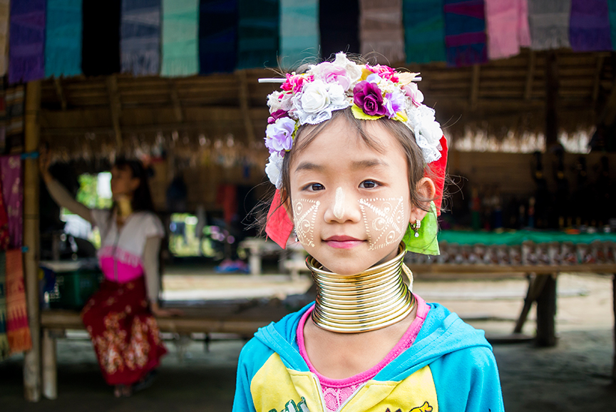
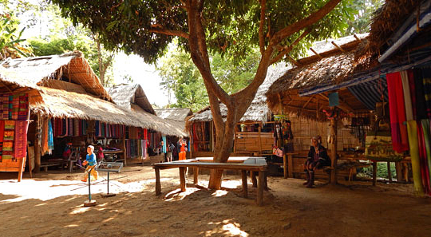
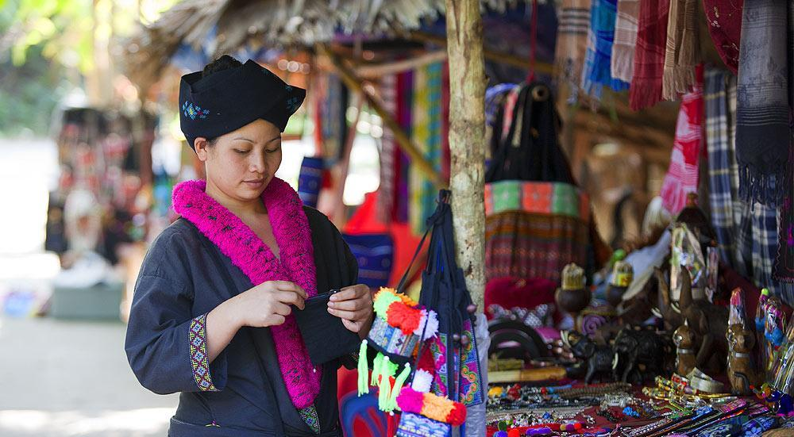

ครอบครัว
การแต่งงาน
ชาวกะเหรี่ยงแต่งงานตอนอายุน้อยทั้งสองฝ่ายต้องทำการสัญญาว่า
จะรักและดูแลกันเป็นอย่างดี ในอดีต หลังจากแต่งงานแล้วฝ่ายหญิงกับฝ่ายชายจะแยกกันอยู่
เป็นเวลา 1 เดือน แต่สำหรับในปัจจุบันทั้งฝ่ายหญิงย้ายไปกับฝ่ายชายได้เลย
และชาวกะเหรี่ยงนิยมการมีลูกจำนวนมาก
การหย่าร้าง
จะมีผู้อาวุโสเป็นคนตัดสินคดีความนั้นให้ ซึ่งในกรณีผู้ชายนอกใจผู้หญิง ฝ่ายชายต้องชดใช้
ค่าสินไหมให้แก่พ่อแม่ฝ่ายหญิงพร้อมกับยกบุตรให้อีกฝ่ายดูแล แต่ถ้าฝ่ายหญิงเป็นฝ่ายนอกใจ
ต้องชดใช้ให้มีมูลค่าเท่ากับของที่ฝ่ายหญิงได้จากฝ่ายชายเมื่อวันแต่งงาน
พร้อมกับยกลูกให้ฝ่ายชายดูแล

การมีลูก
เมื่อมีลูกคนแรกออกมาจะมีคุณย่าคุณยายที่ทำคลอดให้แต่ลูกคนสองอาจ
เป็นบิดาหรือหมอตำแหยที่ทำคลอดให้
ทุกคนจะช่วยเลี้ยงดูอบรมสั่งสอน แล้วเมื่อบุตรโตขึ้นถึงจะแยกย้ายไปอยู่ต่างบ้านใกล้กัน
หมู่บ้าน

ในพม่า
หมู่บ้านชาวกะยันมีความอิสระมากๆ
จะถูกปกครองดูแลโดยกลุ่มผู้สูงอายุและหัวหน้าหมู่บ้าน
ซึ่งทุกคนต้องประพฤติตนให้อยู่ในระเบียบ ชาวบ้านมีความรักใคร่กลมเกลียวกัน มีความปรองดอง
เมื่อมีงานสำคัญก็จะช่วยกันทำ
เช่น เมื่อคนใดคนหนึ่งสร้างบ้านจะมีชาวบ้านอีกหลายคนมาช่วยกัน

ในไทย
การปกครองของชาวกะยันในไทยจะมีความตล้ายคลึงกับการปกครองในพม่า
เมื่อมีการทะเลาะกันหรือมีเรื่องเดือดร้อน
ผู้ใหญ่บ้านจะรายงานให้ประธานทราบและชาวกะยันทุกคนต้องทำตามกฎที่
เขียนใส่กระดาษไรเนียวทุกประการ